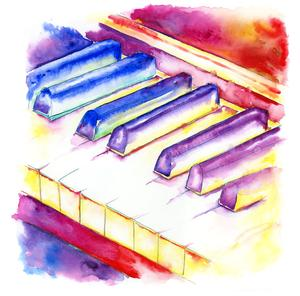

I am a professional self-motivated and hardworking university graduate with a degree in computer science looking for full-time employment or an opportunity to continue learning while in employment. I’m seeking to use my skills and experience in a graduate or training computing position. I’m keen and determined to work to high standards and enjoy all technical aspects of problem-solving. I’m in possession of a positive attitude and willingness to put effort into what I believe to be important.
I’m well presented, professional and polite in my manner and approach. I've always had a keen interest in technology, especially cybersecurity and the work that revolves around it. With the landscapes ever changing within the cyberspace it's clear that more people are digitally active and are in need of security and consultancy more than ever. This can range from helping individual people or large businesses and I would very much want to be part of this growing sector in which I can learn and develop my skills into something which can be a key asset/skill in the future.
Outside of the technology sector I still maintain some discipline and a continued eagerness to learn, which can range from playing tennis at the club, boxing at the gym and practising piano all which take certain levels of motivation and dedication. (My favourite composer is Chopin)

I joined codenation as a starting point to help enter the working field as it provides a better insight to what working in a modern IT workplace would be like and give guidance on next steps after the course and where to look. I believe the experience is invaluable and the personal time spent to learn and grow with codenation is a demonstration of my passion and seriousness/dedication of wanting work in the IT field. This alone can help me stand out against those with the same qualifications at and compare to people who may have already gained work experience in a related role. At the end of my time with codenation I hope to have achieved a better understanding of the work life in a IT related role, great connections and insights into coding/computing companies, and maybe even secure an apprenticeship role afterwards.